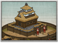

Requires
- Buildings:

Enables
- Buildings: 
Spawned Garrisons
- Units:

Basic Building Statistics (can be modified by difficulty level, arts, skills, traits and retainers)
- Cost: 1600
- Unlocks an additional construction slot
- Consumes food: 2
- Fortified defences (Stronghold)
Description
High walls and higher towers impress the lowly.
A stronghold is a sign to the peasants of exactly who is in charge of their lives, a reminder of where loyalties should lie, and obeisance be made. It is a good base for the troops of the local garrison, enabling them to keep order in the surrounding province, and attract new recruits to their cause. Although not expected to hold out for long when besieged, a stronghold can act as a stumbling block for any invader. Japanese fortifications always had to be built to meet two conflicting priorities. Firstly, there was the obvious need to be a defensive structure that kept out enemies and was sufficiently impressive to keep the locals awed. Secondly, Japanese castles and strongholds had to survive earthquakes, a problem that most of the rest of the world did not have to consider. Japan sits on top of one of the most geologically active areas in the world, and castles could not be lumpen, monolithic structures if they were to survive a quake.